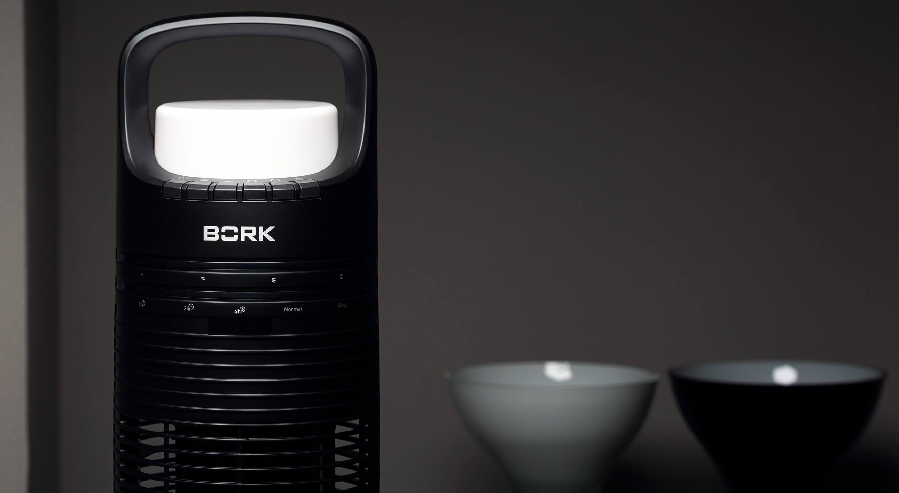
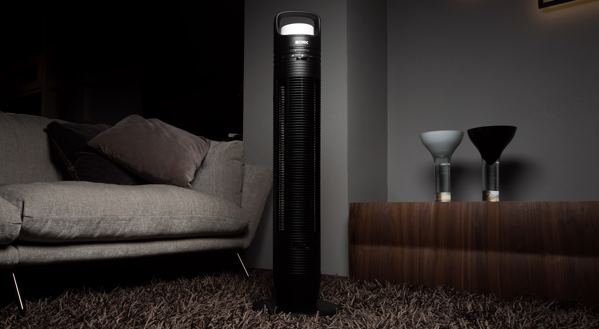
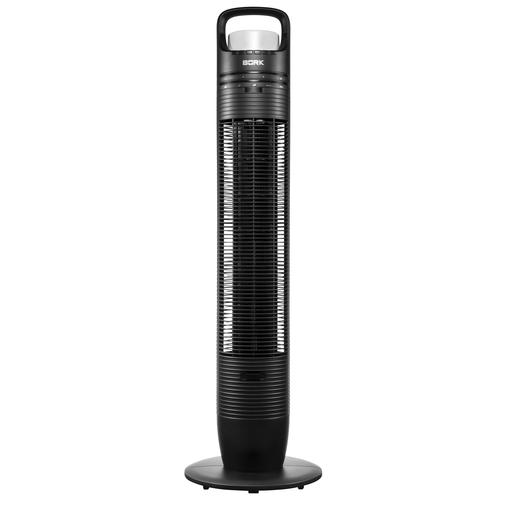
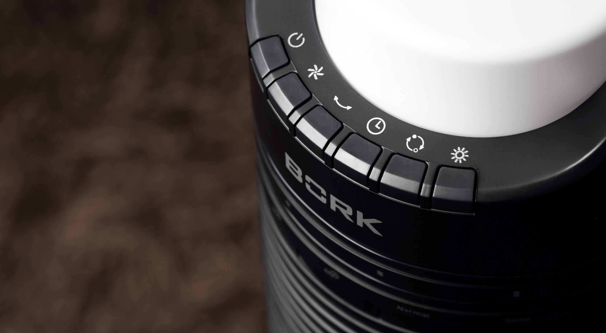
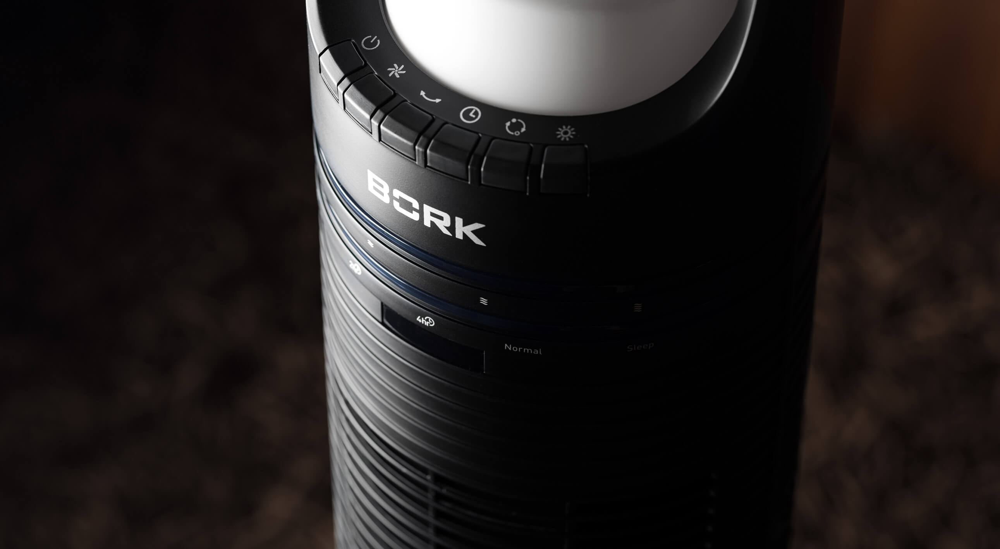
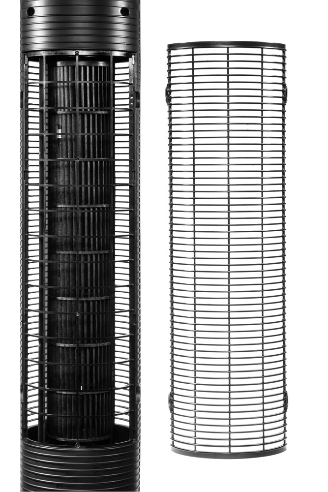

Вентилятор колонный BORK P603
Многофункциональная система проветривания, ароматизации и освещения помещения.
Встроенный источник света с тремя режимами интенсивности освещения
Светодиодная LED-лампа с тремя режимами интенсивности освещения: направленный свет, удобный для чтения, мягкий рассеянный свет, для использования в качестве ночника и умеренный для альтернативного, освещения. Срок службы LED-лампы — более 5 лет без замены.
Автоматические режимы работы
Режим NORMAL - Скорости потока воздуха меняются поочередно, имитируя легкий бриз. Режим естественной вентиляции позволяет освежать воздух в жилых помещениях, обеспечивая эффект естественного проветривания.
SLEEP — Через каждые 30 минут скорость снижается на 1 диапазон, постепенно достигая режима, наиболее комфортного для сна. При достижении минимального диапазона вентилятор продолжает работать в данном диапазоне.
Ароматерапия
Вентилятор P603 станет источником изысканного аромата, если капнуть немного любимого парфюмерного масла на губку ароматизатора.
Вращение в горизонтальной плоскости
Дополнительный комфорт обеспечит функция поворота корпуса на 65⁰, усиливающая эффективность распределения воздушного потока. При активации функции поворота корпус вентилятора неподвижен. Это обеспечивает надёжность и безопасность работы вентилятора.
Удобное управление
Панель управления с режимами работы, таймером и настройками, пульт дистанционного управления с креплением на корпусе — все это обеспечивает удобство управления и эксплуатации.
Высокая энергоэффективность
Двигатель обеспечивает экономичное энергопотребление до 35 Вт, поддерживая высокую производительность при низком уровне шума вентилятора.
Технические характеристики

Мощность: 35 Вт
Число режимов: 2
Число скоростей: 4
Воздушный удар: 4 м
Число режимов освещения: 3
Вес: 3,7 кг
Срок гарантии: 1 год
Установка таймера: 1 ч, 2 ч, 4 ч
Угол поворота: 65˚
Уровень шума: 45 дБ
Длина кабеля: 1,8 м
Страна производства: Китай